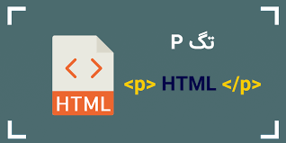

با یک مثال ساده بهتون یاد میدم تا راحت بتوانید HTML و CSS و حتی یکم از JS را درک کنید.
هر سایتی که در اینترنت و مرورگر خود مشاهده میکنید، از HTML و CSS ساخته شده است. HTML اسکلت یک سایت را تشکیل میدهد و CSS به آن اسکلت زیبایی میبخشد. بزارید مثال واضح تر برایتان بزنم اگر بدن یک انسان را در نظر بگیرید HTML اسکلت و استخوان بندی انسان است، و CSS همان پوست و زیبایی بدن است، و اگر بخواهیم JS را هم مثال بزنیم همان مغز انسان است.
.jpg)
تگ head در زیر تگ HTML و بالای تگ body قرار میگیرد و اطلاعاتی دارد که در خروجی صفحه مرورگر قابلمشاهده نیستند. در تگ head معمولاً عناصری مانند عنوان صفحه، توضیحات متا، استایلهای CSS صفحه، لینک به فونتها، فایلهای جاوا اسکریپت و... یافت میشود.
تگ body تعیین کننده محتوای اصلی سند است که در مرورگر نمایش داده می شود. این تگ می تواند حاوی محتوای متن، پاراگراف ها، عناوین، تصاویر، جدول ها، لینک ها، ویدئوها و … باشد.

قبل از معرفی اعلان doctype،باید بدانید که دستور
!DOCTYPE تگ نیست بلکه، یک دسورالعمل برای مشخص
کردن نسخه ی یک صفحه یا فایل HTML است. بنابراین اگر در
ادامه توضیحات از کلمه تگ برای این دستورالعمل استفاده شده
صرفا برای استفاده از اصطلاحات مورد تایید عامه است. خوب
بریم سراغ اصل مطلب.
همانطور که می دانید، کنسرسیوم جهانی وب یعنی w3c، استاندارد های مختلفی از زبان پایه ی وب یعنی HTML را ارائه نموده که هر کدام از آنها در مقایسه با هم هرچند اندک دارای تفاوت هایی هستند.
این موضوع سبب می شود که مرورگر های وب، در برخورد با صفحات مختلف نتوانند در حالت عادی، استاندارد صحیح را شناسایی کنند و لذا به جای پردازش متناسب با استاندارد اصلی، عملیات پیش فرض خود را برای نمایش صفحه انجام می دهند که این موضوع ممکن است با آنچه مورد نظر شما بوده باشد، فرق کند و یا از مرورگری به مرورگر دیگر، صفحات شما به چند شکل مختلف پردازش شوند.
لذا برای جلوگیری از بروز چنین مشکلاتی، از دستور راهنمای DOCTYPE استفاده می شود تا نوع نسخه HTML استفاده شده را برای مرورگر مشخص کند.
تگهای عنوان، کم اهمیت تر است. از تگهای h1 تا h6 برای تعریف موضوع صفحات وب استفاده میشود. h1 اولین عنوانی میباشد که برای صفحات وب ضرورت دارد. تگ h6 در مقایسه با سایر.
.jpg)
تگ br که از کلمه ( Break ) گرفته شده است، تگی است که ما با استفاده از آن میتوانیم سطر را شکسته و به سطر جدید برویم، بطور کلی میتونیم بگیم این تگ کاره دکمه Enter رو برای ما انجام میده.
تگ p در html برای ایجاد پاراگراف استفاده می شود. در مفهوم عامیانه پاراگراف شامل چند سطر نوشته می باشد که به صورت بصری از خطوط قبل و بعد از خود مشخص شده اند. مثلا گاهی با تو رفتگی سطر اول مشخص می شود. پاراگراف در html یعنی یک بلاک متن، و برای ایجاد نوشته در بدنه صفحه استفاده می شود.
تگ img در HTML تگی است که با استفاده از آن می توان تصاویر و عکس ها را در یک صفحه وب قرار داد. بنابراین شما به راحتی با استفاده از این تگ می توانید عکس هایتان را داخل صفحه قرار دهید. تگ img در HTML دو صفت پرکاربرد دارد: صفت Src: برای مشخص کردن آدرس URL فایل تصویر / عکس.
.jpg)
نقشه = map
منطقه = area تگ area زیرمجموعه map است که مناطق قابل کلیک را در نقشه تصویر
مشخص می کند. این تگ برای تعریف یک منطقه قابل کلیک در یک نقشه تصویری
استفاده میشود.
.jpg)
تگ a که از کلمه ( Anchor ) گرفته شده است، تگی است که ما با استفاده از آن میتوانیم یک لینک را در یک صفحه ی وب ایجاد نماییم.
.jpg)
تگ link از نوع void element است که برای ایجاد ارتباط با فایلهایی مانند فایلهای استایل، فونت، فایلهای آیکون و… استفاده میشود. به طور کلی تگ link رابطهای بین سند جاری منبع خارجی(external) را تعریف میکند.
.jpg)
لیست توضیحات: تگ dl در HTML تگ dl که از کلمه ( Description List ) گرفته شده است، تگی است که با استفاده از آن میتوان یک لیست تعریفی یا لیست دارای توضیحات ایجاد نمود. ما برای ایجاد یک لیست توضیحی ، باید از تگ dl و برای ایجاد آیتم های لیست از تگ dt و در نهایت برای ایجاد توضیحات از تگ dd استفاده نماییم.
لیست مرتب: تگ ol که از کلمه Ordered List گرفته شده، تگی است که با استفاده از آن میتوان یک لیست مرتب شده ( لیستی که آیتم های آن دارای شماره گذاری باشد ) را ایجاد نمود. برای ایجاد آیتم های لیست باید از تگ li استفاده نماییم. پیشنهاد میکنم آموزش کار با لیست ها در HTML را مشاهده نمایید.
لیست نامرتب: تگ ul که مخفف کلمه ( UnOrdered List ) می باشد در لغت به معنی لیست نامرتب می باشد، تگی است که با استفاده از آن میتوان یک لیست نامرتب را در یک صفحه وب ایجاد و یا تعریف کرد. اینکه میگم نامرتب یعنی آیتم های این لیست هیچگونه شماره یا در کل هیچگونه ترتیبی ندارند و در کنار همه ی گزینه ها بصورت پیش فرض یک علامت ( دایره توپُر مشکی ) قرار دارد. که البته ما میتوانیم به دلخواه این ( دایره توپُر مشکی ) رو با استفاده از CSS تغییر دهیم، مثلا میتونیم حذفش کنیم کامل یا نه مثلا رنگش رو یا شکل دایره توپُر رو تغییر دهیم.
.jpg)